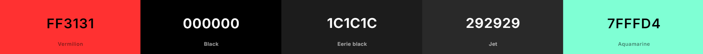

Autor
Voltar para o topo do siteDescrição do Sistema
Tipo: E-commerce
Produtos: Mangás
Ano de Criação: 2024
Descrição: E-commerce voltado para venda de mangás de genêros Manhwa, Shounen, Kadomo, Shoujo, Seinen, Gekigá, entre muitos outros. O site é composto por 7 telas, são elas: Login, Cadastro, Recuperar Senha, Feed/Principal, Compras, Detalhe do Produto e Sobre. Um sistema simples e prático, pensado para trazer facilidade para o usuário que deseja procurar de um maneira mais eficiente por seu mangá. Neste site você poderá procurar por nome, estúdio ou gênero; poderá ver a descrição dos detalhes do produto por texto, imagem ou video; terá várias possibilidades de formas de pagamento, e ainda poderá interagir.
Paleta de cores:

Dificuldades e Obstáculos
Considera-se como dificuldades e obstaculos para este projeto:
- A organiação do código e das telas: ler, entender a documentação e estruturá-la em código, levou um certo tempo e durante o desenvolvimento foi corrigido e mudado muitas coisas relacionadas a link de páginas e funções de cada uma;
- Compreender alguns atributos das tags utilizadas: foi necessário muita pesquisa para entender como alguns atributos funcionavam, tanto no HTML quanto no CSS, e se era bom usá-los ou não;
- Organização dos arquivos e seus respectivos caminhos: por mais imsples que pareça ser, é um pouco complicado elaborar como os arquivos vão ficar organizados, principalmente para não ficar confuso a utilização de caminhos no código;
- Falta de criatividade e coererência: faltou ideias para os elementos que iriam compor as páginas, coisas como logomarca, nome e paleta de cores, foi algo que custou um certo tempo;
- Estruturação do CSS: ainda estou num nível bem básico do mesmo e a cada passo dado, tem q ser estudado a ação por trás e como isso afeta as outras páginas;